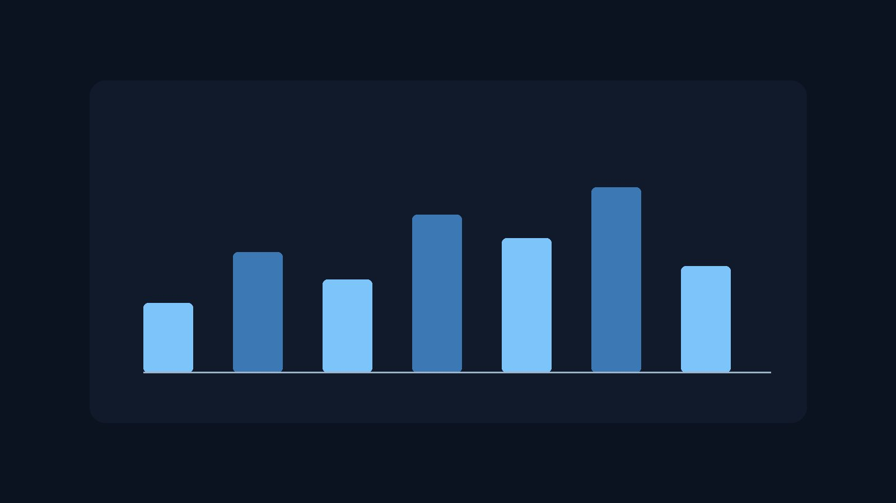

One screen, no setup
Connect a source and the dashboard is populated. There is no tag manager, no event taxonomy to design first, and no onboarding call standing between you and your own numbers.

Three things, done properly, instead of forty things behind six menus.
Connect a source and the dashboard is populated. There is no tag manager, no event taxonomy to design first, and no onboarding call standing between you and your own numbers.
Every metric shows against the previous week, because the useful question is almost never "how many" on its own. It is whether the number moved, and in which direction.
One short email on Monday morning with what changed and what did not. Written to be skimmed in under a minute on a phone, which is where most founders actually read it.
This is the weekly view. Move over a column, or tab to it with the keyboard, and it reports its own figure. A static screenshot never conveys how a live dashboard feels.
Select a day to see its signup count.
Final pricing lands when the beta closes. Everyone on the waitlist keeps beta pricing for their first year.
$12/month
$29/month
$74/month
We are onboarding in small batches so support stays real. Fields marked with an asterisk (*) are required.